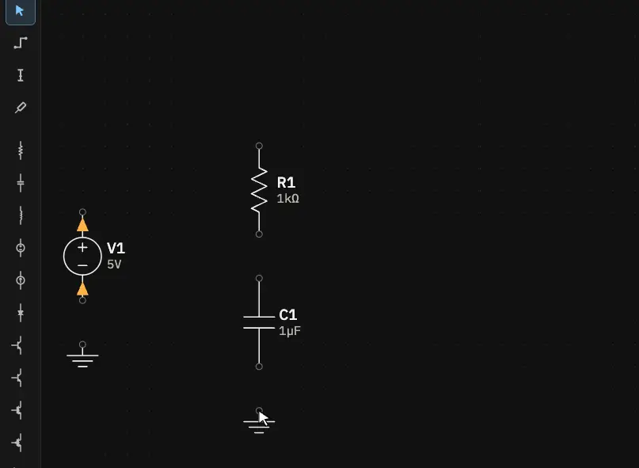
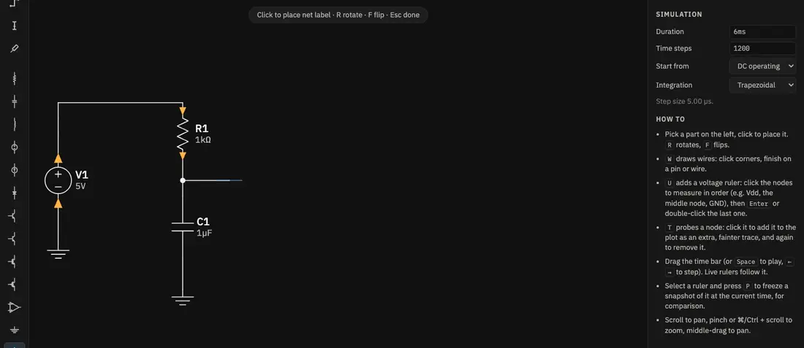
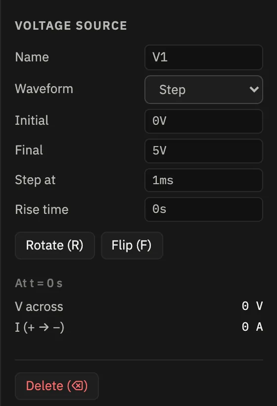
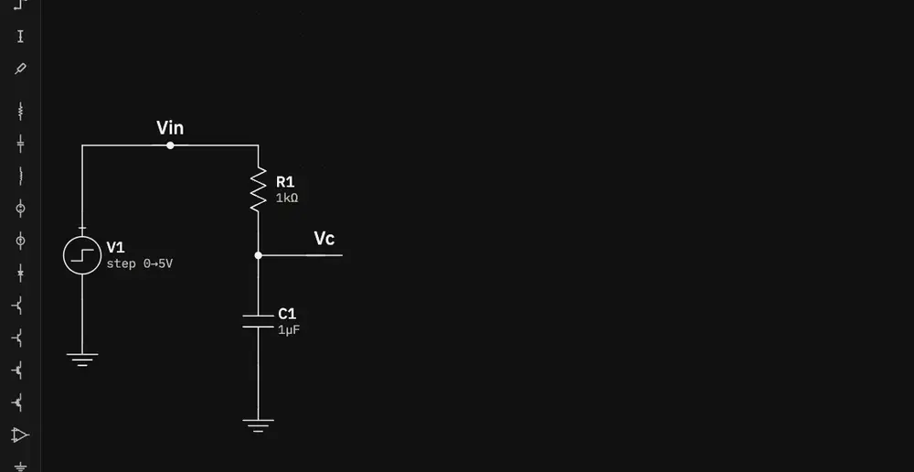
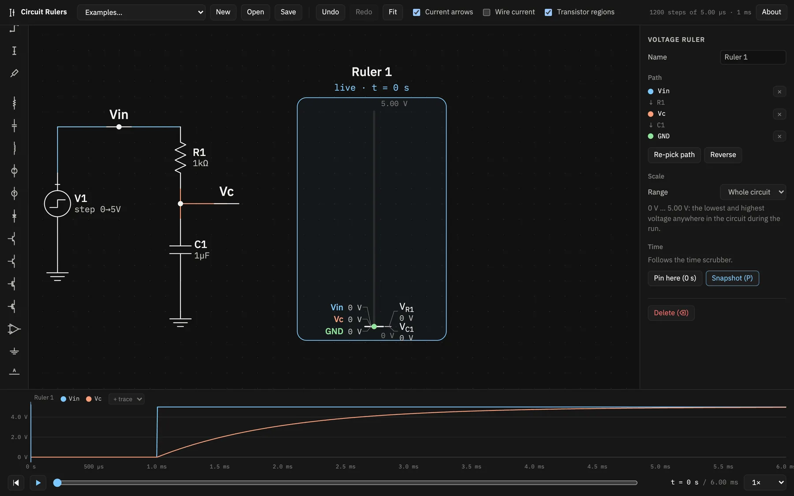
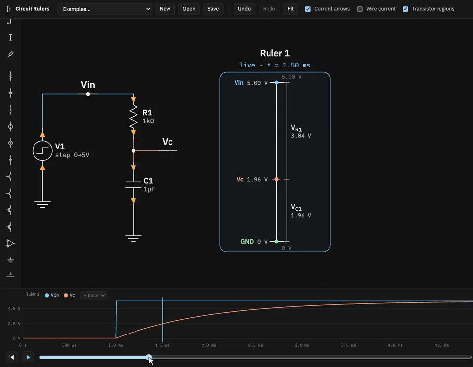

Tutorial 1
Your first circuit: an RC charging curve
Build a resistor and capacitor driven by a 5 V step, put a voltage ruler next to it, and watch the voltage move from the resistor onto the capacitor as it charges.
Open the app in another tab. The clips below play at real speed. In them, a blue ring marks each click and the keys pressed appear as badges.
1Start an empty circuit
Click New in the top bar. The canvas clears, but the simulation settings are kept. With
nothing selected, the inspector on the right shows them. Check that Duration is
6ms and Time steps is 1200, which are the defaults. If you came from
another example, type those values in.
2Place the parts
Pick a part in the left toolbar, then click on the canvas to drop it. Parts snap to the grid, and the tool stays active so you can place several. Press Esc to go back to the select tool.
- a voltage source on the left,
- a resistor and, below it, a capacitor on the right,
- two grounds, one under the source and one under the capacitor.
3Wire it up
Press W for the wire tool. Click where a wire starts, click once at each corner, and finish on a pin or another wire. The wire ends there on its own. Wires only join at their ends and at pins: where a wire ends on another wire, a dot shows the junction.
Wire the source's + pin up and across to the top of R1, R1 down to C1, and each ground to the part above it. Then add one short wire from the middle node out to the right. You'll put a label at its end.

4Name the nodes and make the source a step
Unnamed nodes are called N1, N2, … To give them better names, pick the Net label tool (the last
one in the toolbar) and click on the top wire and on the end of the stub. Select each label and type a
Net name in the inspector: Vin for the top wire and Vc for the
stub.
Now click V1 to select it and change its Waveform from DC to Step. The defaults are what we want: 0 V until 1 ms, then 5 V.


5Add a voltage ruler
Press U for the ruler tool and click the nodes to measure, in order: Vin, then
Vc, then GND. You can click anywhere on a wire or a pin of the node. The hint
at the top of the canvas shows the path so far, like Vin → Vc. Press Enter (or
double-click the last node) to finish.

The new ruler appears beside the circuit and is selected, so the plot at the bottom now shows its nodes. At t = 0 the step hasn't happened yet, so every node sits at 0 V and the ruler is collapsed at the bottom of its scale. The plot already shows the whole run: Vin jumps at 1 ms and Vc follows it up along a curve.

6Scrub through time
Drag the time scrubber at the bottom, or click and drag on the plot. The live ruler follows. Read the two brackets beside the spine: VR1 is the drop across the resistor and VC1 the voltage on the capacitor. Their sum is always Vin.

Right after the step, the capacitor is still empty and holds 0 V, so all 5 V drop across R1. Current flows, C1 charges, and the drop moves from R1 onto C1. The time constant is τ = R·C = 1 kΩ × 1 µF = 1 ms. One τ after the step (t = 2 ms), Vc has reached 1 − e−1 ≈ 63 % of 5 V, about 3.16 V.
← and → step one time point at a time, and ⇧ makes it ten. Home and End jump to the start and the end.
7Pin a snapshot and play
Move the scrubber to 1.5 ms: press Home, then ⇧→ 30 times, since each step is 5 µs. Click the ruler to select it and press P. A copy appears to its right, pinned at 1.5 ms. Its frame is dashed in amber and a marker shows its moment on the plot.
Press Space to play. The live ruler runs on while the pinned one stays put.


Try next
-
Select R1 and change its resistance to
2.2k. The circuit re-simulates at once: the curve slows down, and the pinned ruler now shows the new circuit at 1.5 ms. A pinned ruler holds a moment of the run, not a copy of old values. - Select the pinned ruler and click Follow scrubber to make it live again, or Move pin to … to re-pin it at the current time.
- Swap R1 for an inductor to get a ringing RLC circuit (or load RLC ringing from the Examples menu).
- Your circuit autosaves in this browser. Save downloads it as a JSON file, and Open loads one back.